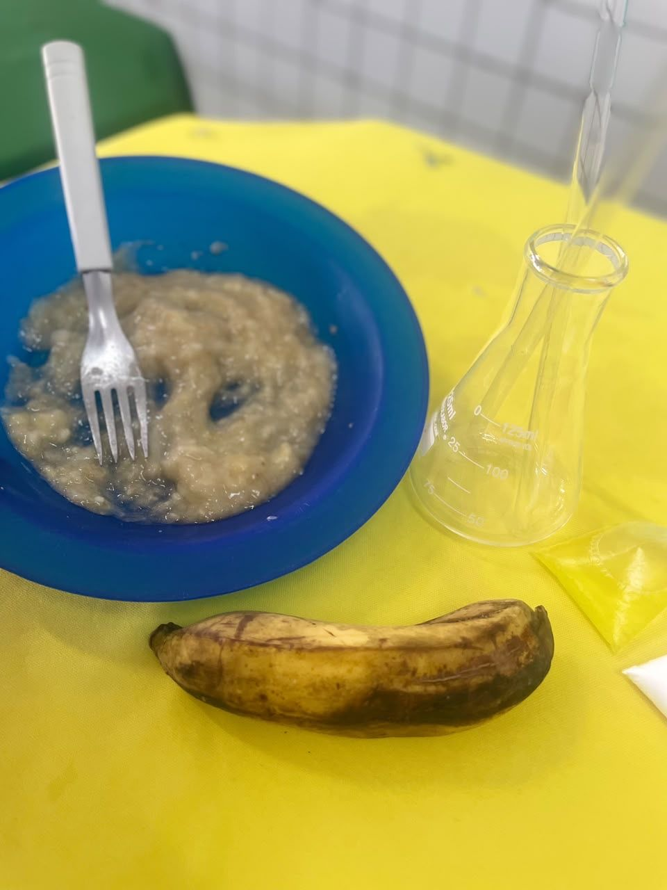
Experimento
Lima Castro Projeto
PIBIC Jr
Feira de Ciências 2026
Na Feira de Ciências 2026, a turma representou o estado da Paraíba, apresentou o experimento da extração do DNA da banana e pesquisou cientistas paraibanos de várias áreas.
Experimento

Cientistas
Segundo a turma, os pesquisadores da Paraíba trabalham principalmente com:
UFPB · Genética e organismos aquáticos
Desenvolve pesquisas sobre parasitologia, genética e saúde de peixes e outros organismos aquáticos, contribuindo para a preservação dos ecossistemas.
É professora da Universidade Federal da Paraíba (UFPB) e líder do grupo de pesquisa em patologia, imunologia, biotecnologia e genética de organismos aquáticos.
UFPB · Biologia Molecular
Atua no estudo de proteínas e moléculas biologicamente ativas, com aplicações importantes na medicina e no desenvolvimento de novos medicamentos.
UFCG · Saúde Pública
É referência em pesquisas sobre violência, direitos humanos, envelhecimento e saúde coletiva, desenvolvendo projetos voltados à melhoria da qualidade de vida da população.
É professora da Universidade Federal de Campina Grande (UFCG) e líder do Grupo de Pesquisa Violência e Saúde.
UFCG · Sociologia
Pesquisa temas como desigualdade social, violência, minorias e políticas públicas, contribuindo para estudos sociais no Nordeste.
É socióloga e professora da UFCG no Centro de Formação de Professores, em Cajazeiras, onde atua em Sociologia da Saúde.
UFPB · Química Analítica
UFPB · Química Orgânica
UFPB · Síntese e biocatálise
Química Ambiental
Química Inorgânica e materiais
UFPB · Física
UFPB · Física
Física
Física
Física
Fotos
Toque em uma foto para ver em tamanho maior.
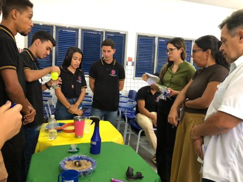
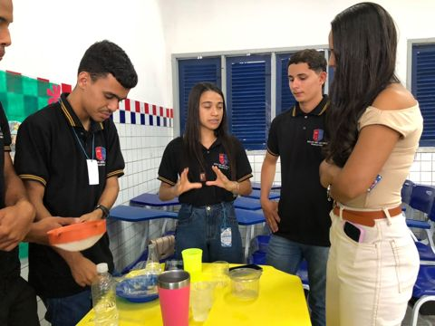
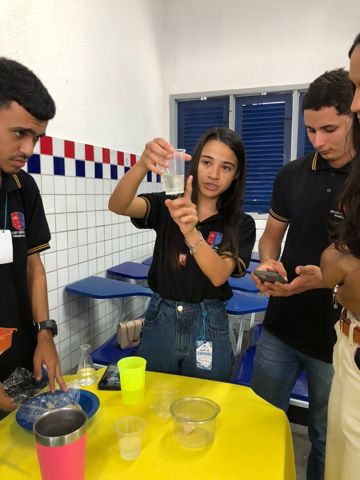
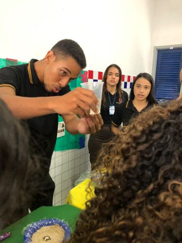
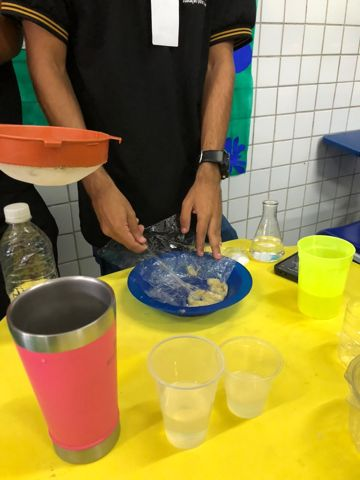
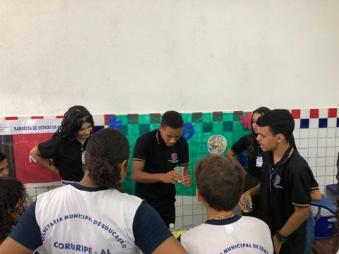
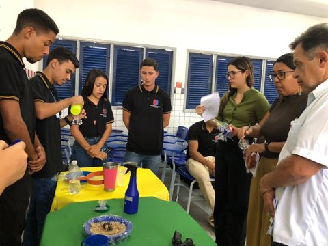
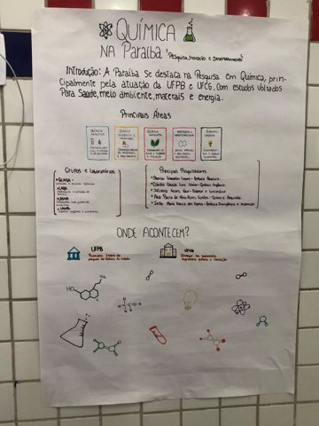
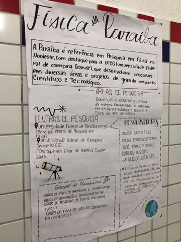
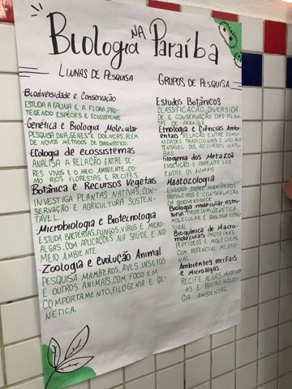
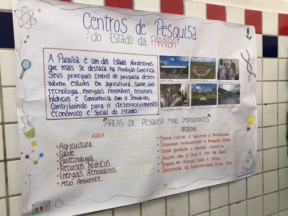